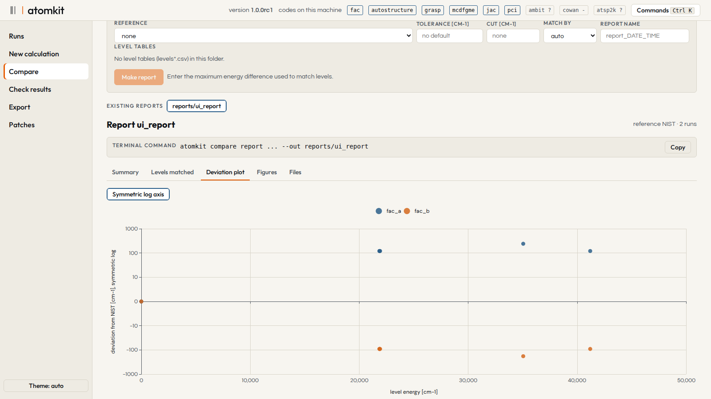

What it does
Define once
Element, ion, configurations and what to compute, in a short text file or a form. Switch codes by changing one word.
One table format
Levels, lines and rates come back with the same columns from every code, so results compare directly.
Compare and calibrate
Put codes side by side or against NIST, with matched levels, deviation plots and uncertainties.
Export
CHIANTI, ADAS adf04, XSAMS, AtomDB, TARDIS, Kurucz, VALD and more, plus atomkit's own text format that keeps every column, its units and source information.
The codes
- FAC
- GRASP
- AUTOSTRUCTURE
- MCDFGME
- JAC
- pCI
- AMBiT
- Cowan
- ATSP2K
The codes are separate programs under their own licences and are not included. atomkit reads, compares and exports results without any of them installed.

Compare: calculations against a reference table in one report (test data shown).
How it works
- Fill in the short form below. You need a GitHub account; the form asks for your institution and what you want to test or build with atomkit.
- Each form is read by hand. GitHub then emails you an invitation to the repository.
- Accept the invitation and download the version linked in the reply. Run the installer for your system; it downloads Python and dependencies, so this step needs internet.
Installing, once invited
sh install.sh # macOS, Linux
powershell -ExecutionPolicy Bypass -File install.ps1 # Windows
atomkit gui # then open the web interfaceTest it and contribute
The form is a GitHub issue. It is public, so write nothing private in it. Bug reports, comparisons with your own results and new code interfaces are all welcome.